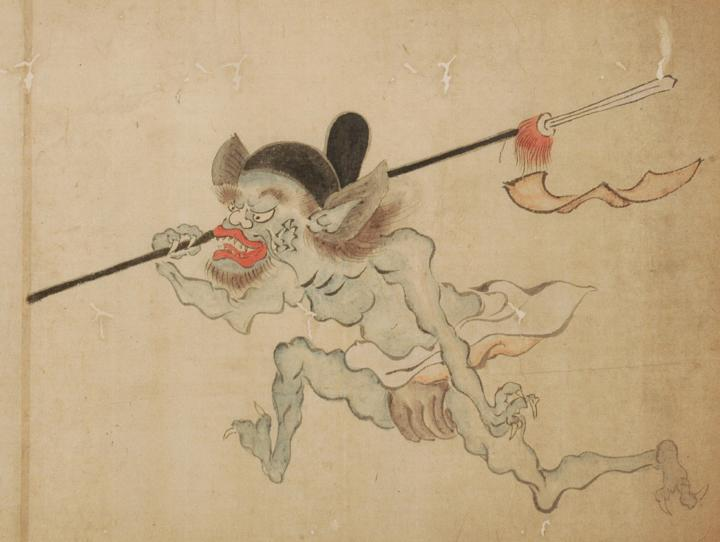

前方へ走り出す青鬼。冠をかぶり、鉾を担ぎ、衛侍の姿で描かれている。冠には馬の尻尾の毛でできた半月形の飾りがついている。また、鉾の先には赤い小旗と染毛がつけられている。
出典：親書誌：U426_nichibunken_0054：百鬼夜行絵巻；ヒャッキヤギョウエマキ／日付：2006／資源識別子：U426_nichibunken_0054_0001_0001
Copyright (c)2010- International Research Center for Japanese Studies, Kyoto, Japan. All rights reserved.